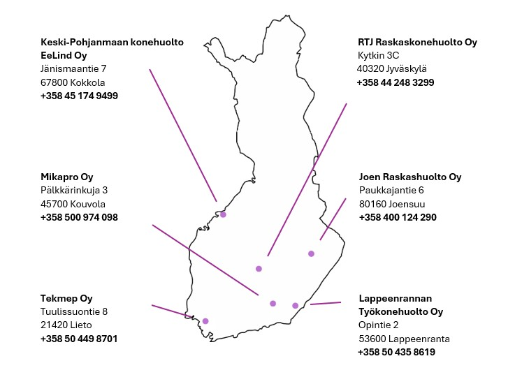

Joensuu
Joen Raskashuolto Oy
Paukkajantie 680160 Joensuu +358 400 124 290
EtusivuSopimushuollot
Mikään tuote ei ole särkymätön. Siksi olemme panostaneet vahvasti huoltoverkoston rakentamiseen.
Suomen Vasarakaupan asiakkaita palvellaan tällä hetkellä kuudella paikkakunnalla. Jokaisessa on erikoistuttu muun muassa hydraulivasaroiden kunnostukseen ja huoltoon.
Lähin huoltopisteesi palvelee asiantuntevasti: sen kautta saat apua, varaosia, vasaroita ja muutakin koneisiin liittyvää. Käy ihmeessä tutustumassa myös sopimushuoltojemme kotisivuihin.

Samojen omistajien huoltoyhtiö, samassa osoitteessa Suomen Vasarakaupan kanssa.
Ota yhteyttä lähimpään huoltopisteeseen tai suoraan meihin — autamme löytämään oikeat osat ja nopeimman reitin takaisin töihin.